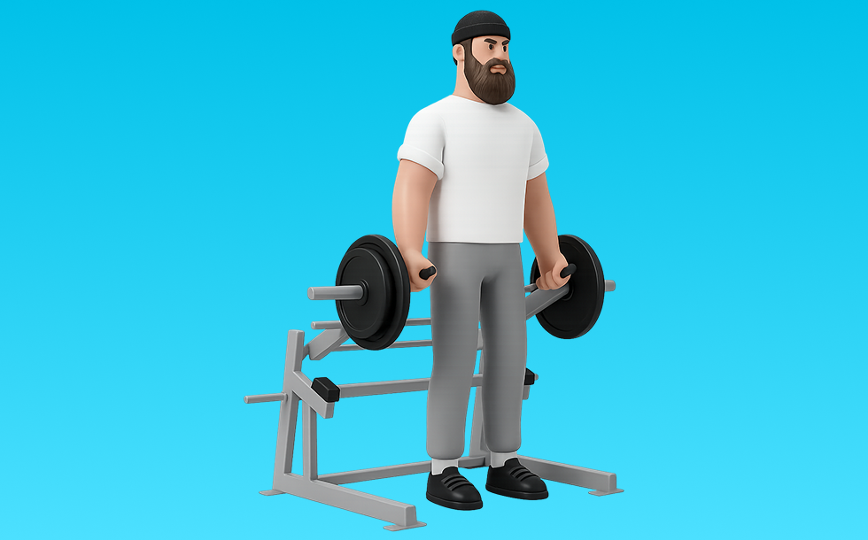

デッドリフトエリート

デッドリフトエリートとは、マシンを使って「股関節で持ち上げる」動作を行い、主にお尻（臀筋）、太もも裏（ハムストリング）、背面全体を鍛える筋力トレーニングです。軌道が安定してフォームを管理しやすいのが特徴で、背すじを保って股関節主導で引き上げ、コントロールして戻す動作を繰り返します。これにより、ヒンジ動作の筋力向上と下半身の強化が期待できます。
- 対象部位
- 脚
- 器具
- マシン
- 記録形式
- 重量・回数
- 別名
- デッドリフトエリート / デッドリフトマシン / deadlift elite
YouTube動画
-
【デッドリフト】絶対に効く正しいやり方を解説致します。広背筋・僧帽筋そして脚に聞かせるテクニックありです。
-
そのデッドリフト間違ってます。デットリフトの正しいやり方はこれです。
-
【デッドリフト】腰を痛めたくない人に多いフォームミスの例と改善方法
-
【背中トレ】そのデッドリフトは間違っている！？絶対に背中に効くようになるデッドリフトのポイントとは？【筋トレ】
-
デッドリフトエリート使用方法
-
ウエイトリフティング強化のためのデッドリフト
-
【実演解説】効果絶大なデッドリフトを徹底解説！
-
断言します。デッドリフトやらない人は絶対にデカくなりません
-
デッドリフトは中年の場合、どこまで下ろすべきか？正しく知ってますか？重要です。
-
デッドリフトのバリエーション種目
-
100kgから始めるトップサイドデッドリフト！
-
【毎日3分】自宅でできる背筋トレーニング！ダンベルを使って背中を引き締めよう
-
[元ランナーの筋トレ]デッドリフト
-
【筋トレ】背中のトレーニングでデッドリフト200kgに挑戦！4種目で広背筋や僧帽筋を鍛える【解説付】
-
封印解除！ワイドデッドリフト/パワーリフティング
YouTubeショート
-
持田選手に2種類のデッドリフトについてレクチャーしていてもらいました！次はどの種目の解説をやってほしいかコメントしてね！#筋トレ #volix #トレーニング #ちょこっと惜しい
-
デッドリフトは痩せたい人も、腰を強くしたい人も絶対やるべき！ チャンネル登録をお願いします！ #筋トレ #ダイエット #腰痛
-
デッドリフトは正しく・丁寧に‼︎ #筋トレあるある #デッドリフト#筋トレ初心者 #背中トレ
-
ぜったいにあきらめない #デッドリフト #運動 #ジム #モチベーション
-
こんなデッドリフトはやめましょう #フィットネス #筋トレ
-
デットリフトは筋肥大にいいですか？ #デットリフト #筋肥大 #サム切り抜き #samgetitright #筋トレ #フィットネス #ボディビル #ジム #筋肉 #ジョージ #メンズコーチ #兄弟
-
デッドリフトの正しいやり方#shorts
-
【筋トレ2か月目】デッドリフト100kg上がったんですけど、これくらいの腰がちょっと曲がっちゃうのはいいの？ #ジム #筋トレ #デッドリフト #フォーム改善
-
デットリフト80kgで充分#筋トレ #shorts
-
床引きデッドリフトができない場合の代替種目は？【筋トレ】
-
朝倉未来ストーリー90kgデッドリフト
-
後輩のデッドリフトが強すぎる件 20歳 282.5kg ノーストラップ
-
デッドリフトをやった方が良い理由をデッドリフトをやりながら解説します！
-
横川尚隆 デッドリフト(ベルト無し２００㎏)【切り抜き】#shorts
-
【比較】ルーマニアンデッドリフトVSデッドリフト #セミパーソナルジム #トレーニング #くびれ
-
デッドリフトは地球の種目#shorts #横川尚隆 #筋トレ
-
素手デッドリフト250kg
-
GLUTEBUILDER DEAD LIFT ELITE #glutebuilder #podcast #hipabductor
-
200kg持ち上げてみた🌼 #パワーリフティング #deadlift #デッドリフト #筋トレ #筋トレ女子 #ジム #powerlifting
-
エニタイムに体験に行ってイキリデッドリフトやる悪い人 #powerlifting #benchpress #squat #deadlift
-
永久保存版デットリフトの極意
-
【デッドリフトVSスクワット】筋トレ初心者必見！どっちが効果的？ #shorts #筋トレ #デッドリフト #スクワット #初心者
-
ストロングマンの方がパワーリフターよりデッドリフト強くない？？
-
150kgのダンベルを扱える数少ない人類 【世界の筋肉】
-
横川尚隆 トレーニング デッドリフト【切り抜き】#shorts
-
疑問視されているデッドリフトのルール #筋トレ #パワーリフティング #デッドリフト #shorts
-
【ナローデッド】全日本王者の極意を公開🔥 #パワーリフティング #筋トレ #powerlifting #デッドリフト #ナローデッドリフト #ワイドデッドリフト #フィットネス #shorts
-
自己ベスト80kgなるか、、、？ #Shorts #筋トレ女子 #ベンチプレス
-
ベンチプレス102.5kg！のむちゃんの極意
-
【ヒップスラスト（スミスマシン）】これ見るだけでフォーム攻略 #ダイエット #トレーニング #むくみ改善 #下半身トレーニング #脚痩せ
-
デッドリフト175kgラックから
-
500年後のデッドリフト#shorts
-
【ベスト更新】252.5kgのスクワット バーベルは友だちだから怖くない‼︎スクワットへの愛情が止まらない‼︎
-
高重量デッドリフトの危険性
動作方法
- 背中を中立に保ち、股関節から動き始める
- もも裏の張りを感じる位置まで下ろす
- 足裏で床を押して立ち上がる
動作ポイント
- 背中を丸めない
- 膝を伸ばしきらない
- バーや重りを体から離しすぎない
ワンポイントアドバイス
- ウォームアップで股関節と足首を動かす
- 高重量の日はセーフティ設定を確認する
目的別回数設定
目的や体力に応じた一般的な目安です。無理のない範囲で調整してください。
- 筋力アップ
- 1〜5回
- 筋肥大
- 6〜12回
- 持久力アップ
- 13〜20回
YouTube動画について
動画はYouTubeの公開情報をもとに表示しています。内容は投稿者によるもので、Biggrによる監修ではありません。
アプリを入手
筋トレやトレーニングの記録はBiggrにお任せください。今すぐ無料で使い始められます。